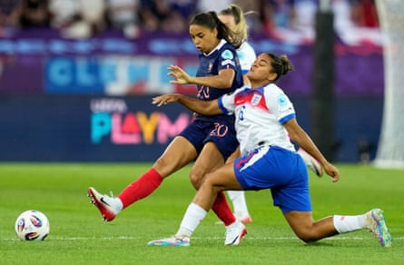
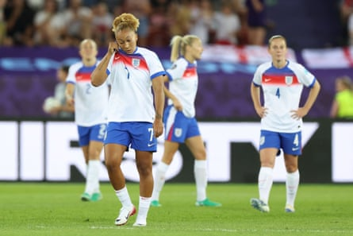

France (4-3-3)
Pauline Peyraud-Magnin Scarcely tested by England until late on. Saved superbly from Agyemang in the 90th minute. 6
Élisa De Almeida Roamed forward dangerously and caused Jess Carter extensive problems. Occasionally looked vulnerable defensively but England didn’t trouble her enough. 7
Maëlle Lakrar A fairly solid performance, particularly in the absence of France’s captain Griedge Mbock at centre-back. 7
Alice Sombath Face a tough task against the athleticism of Alessia Russo but held her own fairly impressively. 7
Selma Bacha Looked like a top-class, natural left-back, something England haven’t really had available in their player pool for a generation. 8
Sakina Karchaoui Technically impressive on the ball, with a good work rate to match. Got the better of Georgia Stanway repeatedly. 8
Oriane Jean-François Struggled against Lauren James early on when the Lionesses were briefly on top but improved as the match went on. 6
Grace Geyoro Showed good energy to put pressure on Keira Walsh, especially in the first half, and thwarted England’s gameplan. 7
Delphine Cascarino She has the most assists in the NWSL so far in 2025 and contributed another here, tormenting England at times. 8
Marie-Antoinette Katoto Good movement in the box for her goal and linked up play nicely. A textbook number nine. 7
Sandy Baltimore Chelsea’s best player of the season produced another excellent performance, though England will feel her goal should not have stood. 8
Subs
Kadidiatou Diani (on for Delphine Cascarino, 62 mins). Wasn’t able to show her typical skill, pace and power but, by the time she came on, France’s prime focus was to conserve the lead. 6
Melvine Malard (on for Sandy Baltimore, 62 mins). A lively cameo, running at the England defence to good effect. 7
Clara Matéo (on for Marie-Antoinette Katoto, 62 mins). Has been in good form but had to do as much defending as attacking after coming on. 6
Melween N’Dongala (on for Elisa De Almeida, 80 mins). 6
Sandie Toletti (on for Sakina Karchaoui, 80 mins). 6
Delphine Cascarino tormented England.Photograph: Martin Meissner/AP
England (4-3-3)
Hannah Hampton Looked nervous a few times, and almost fumbled the ball in for what would have been a third France goal. 5
Lucy Bronze Usually so reliable and exemplary at major tournaments, this was one of her poorer performances in an England shirt, in attack and defence. 5
Leah Williamson Produced some important blocks and tackles but will have been frustrated that England left the whole back four with too much to do. 6
Alex Greenwood Not how she would have wanted to celebrate her 100th England cap. She was sacrificed late on when England threw extra players into the attack. 6
Jess Carter Struggled repeatedly in a difficult first half as France got in behind her again and again as France exploited England’s left. 4
Keira Walsh Was not at her best for much of the game but she improved and took her goal really well to give England late hope. 5
Georgia Stanway She was dispossessed a bit too often. She missed the second half of the season with a knee injury, so understandably won’t be at her peak yet. 5
Beth Mead Put in some good tackles early on, but you’re hoping for much more from your wingers creatively. 5
Lauren James Made an impressive start and looked a threat every time she was on the ball, but was she fully fit, off the ball? Sarina Wiegman may have brought her back too soon. 5
Was Lauren James brought back too soon?Photograph: Ryan Browne/Shutterstock
Lauren Hemp It was disappointing not to be able to see her running at the defence more often, and she did not offer much cover defensively. 5
Alessia Russo Showed her instinctive qualities in the box for her goal that was disallowed, but otherwise had a quiet night. 6
Subs
Niamh Charles (on for Jess Carter, 60 mins). Possibly made a case to start ahead of Jess Carter on Wednesday. 6
Ella Toone (on for Lauren James, 60 mins). Booked for a late challenge but did help England start to apply a bit of pressure in the closing stages. 6
Chloe Kelly (on for Beth Mead, 60 mins). Did not play badly but will have been disappointed not to have more of an impact off the bench. 6
Grace Clinton (on for Georgia Stanway, 77 mins). Showed good energy and physicality but fired over the bar with her best half chance. 6
Michelle Agyemang (on for Alex Greenwood, 86 mins). Looked a handful immediately and perhaps should have been brought on a lot sooner in the second half. 6